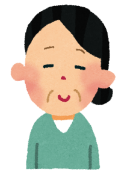

Nghiem cam gian lan! Neu dong ung dung hoac chuyen tab se bi coi la GIAN LAN va bi ghi lai.
⚠️
このテストはSafariで開いてください
Vui long mo bai kiem tra bang Safari
LINEのブラウザではカンニング防止機能が正しく動作しません。
手順 / Cach mo:
1. 右下の ... または ⋮ をタップ
2. 「ブラウザで開く」 を選択
3. Safari で開く
このページはLINEブラウザでは受験できません。
文法テスト（Bai kiem tra ngu phap）
問題１．⚠ ～ところ／～ばかり／～はずを使って会話を完成させてください ＜各3点×6問＝18点＞
※ この問題は先生が採点します。日本語で書いてください。
問題２．⚠ 絵を見て答えてください ＜各3点×7問＝21点＞
※ この問題は先生が採点します。「～によると～そうです」「～がします」「～ようです」などで書いてください。
１） |
２） |
３） |
４） |

５） |
６） |
７） |
|
問題３．⚠ 敬語に変えてください ＜各2点×8問＝16点＞
※ この問題は先生が採点します。（ ）の中を敬語に変えてください。
カフェで友達のお母さんに会いました。
問題４．⚠ 敬語が正しければ○、間違っていれば×を書いて正しく直してください ＜各5点×6問＝30点＞
※ この問題は先生が採点します。○か×を選んで、×の場合は正しい形を書いてください。
問題５．⚠ 読んで質問に答えてください ＜各5点×3問＝15点＞
※ この問題は先生が採点します。日本語で答えてください。
最近、新聞を読む人が少なくなっています。パソコンやスマホでニュースを読む人が増えたからです。でも、私は先週初めて新聞を読みました。いつも読まないようなものが読めて面白いと思いました。新聞を読むことでたくさんのニュースを知ることができます。
聴解テスト（Bai kiem tra nghe hieu）
Toc do phat:
問題１．音声を聞いて答えてください ＜各2点×3問＝6点＞
Nghe va chon dap an dung.
問題２．ミラーさんについて音声を聞いて答えてください ＜各2点×3問＝6点＞
Nghe va chon dap an dung.
問題３．電話の音声を聞いて答えてください ＜各2点×3問＝6点＞
Nghe dien thoai va chon dap an dung.
問題４．敬語で答えてください ＜各2点×3問＝6点＞
Nghe va chon dap an dung.
問題５．⚠ ミラーさんの予定を聞いて書いてください ＜16点＞
※ この問題は先生が採点します。日本語で書いてください。
問題６．音声を聞いて○か×で答えてください ＜各3点×5問＝15点＞
Nghe va chon O (dung) / X (sai).
①
②
③
④
⑤
問題７．ニュースを聞いて答えてください ＜各2点×2問＝4点＞
Nghe tin tuc va chon dap an dung.
問題８．音声を聞いて、尊敬語か謙譲語か○×で答えてください ＜各3点×10問＝30点＞
Nghe va chon O (dung) / X (sai) cho kinh ngu va khiem nhuong ngu.
| No. |
尊敬語 |
謙譲語 |
| １ |
|
|
| ２ |
|
|
| ３ |
|
|
| ４ |
|
|
| ５ |
|
|
問題９．音声を聞いて、できる○／できない×で答えてください ＜各2点×3問＝6点＞
Nghe va chon O (co the) / X (khong the).
問題１０．⚠ 音声を聞いて答えてください ＜5点＞
※ この問題は先生が採点します。日本語で答えてください。
Da hoan thanh bai kiem tra
Hay nhan nut ben duoi de gui ket qua cho giao vien.
文法テスト
-
/ 100点（自動採点分）
聴解テスト
-
/ 100点（自動採点分）
黄色マークの問題は先生が採点します。上記スコアには含まれていません。
採点が終わったら、結果を先生に送信してください。